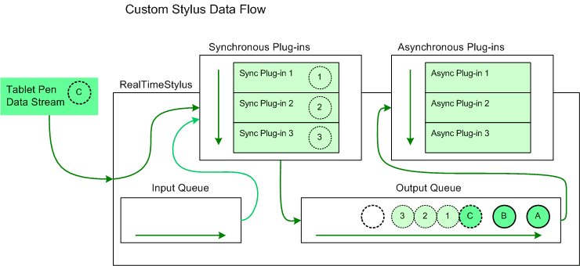
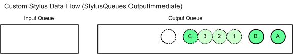
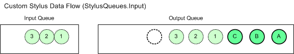
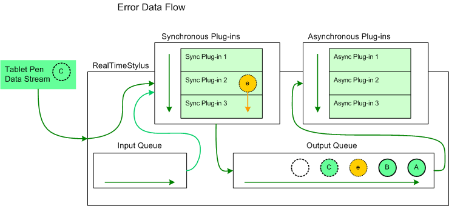
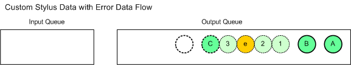

Plug-ins for the RealTimeStylus class must implement the IStylusSyncPlugin or IStylusAsyncPlugin interface, or both. While you have to implement all of the plug-in interface methods, your plug-in only receives calls on methods flagged in the plug-ins Microsoft.StylusInput.IStylusSyncPlugin.DataInterest or Microsoft.StylusInput.IStylusAsyncPlugin.DataInterest property.
The methods defined on the interfaces use objects in the Microsoft.StylusInput.PluginData namespace to pass the pen data to the plug-ins. The following table describes the data objects that are parameters in the notification methods and lists the DataInterestMask value associated with the notification.
| Plug-in Data | DataInterestMask Value | Description |
|---|---|---|
| CustomStylusData | CustomStylusDataAdded | Custom application data that a plug-in adds. |
| ErrorData | Error | Error information that the RealTimeStylus object adds in response to an unhandled exception in one of its plug-ins. |
| InAirPacketsData | InAirPackets | Packet information for stylus motion while the stylus is in-air above the digitizer. |
| PacketsData | Packets | Packet information for stylus motion while the stylus is touching the digitizer. |
| RealTimeStylusDisabledData | RealTimeStylusDisabled | Information the RealTimeStylus object adds when it is being disabled. |
| RealTimeStylusEnabledData | RealTimeStylusEnabled | Information the RealTimeStylus object adds when it is being enabled. |
| StylusButtonDownData | StylusButtonDown | Information about the particular stylus button that is being pressed. |
| StylusButtonUpData | StylusButtonUp | Information about the particular stylus button that is being released. |
| StylusDownData | StylusDown | Packet information for a stylus as the stylus is brought in contact with the digitizer. |
| StylusInRangeData | StylusInRange | Information about the particular stylus that is entering the input area of the RealTimeStylus object or entering the detection range of the digitizer above the input area of the RealTimeStylus object. |
| StylusOutOfRangeData | StylusOutOfRange | Information about the particular stylus that is leaving the input area of the RealTimeStylus object or leaving the detection range of the digitizer above the input area of the RealTimeStylus object. |
| StylusUpData | StylusUp | Packet information for a stylus as the stylus is lifted from the digitizer. |
| SystemGestureData | SystemGesture | Information the RealTimeStylus object adds when it detects a system gesture. |
| TabletAddedData | TabletAdded | Information about the Tablet object that is being added. |
| TabletRemovedData | TabletRemoved | Information about the Tablet object that is being removed. |
Â
For information about how the RealTimeStylus object handles the tablet pen data stream, see Working with the RealTimeStylus Class.
The RealTimeStylus object checks the Microsoft.StylusInput.IStylusSyncPlugin.DataInterest or Microsoft.StylusInput.IStylusAsyncPlugin.DataInterest property of a plug-in when the plug-in is added to the RealTimeStylus object's synchronous or asynchronous plug-in collection. Therefore, you should use the DataInterest property to subscribe to all of the notifications this instance of your plug-in uses, however infrequently, but not to any of the notifications this instance of your plug-in never uses. For notifications that your plug-in only uses occasionally check the state of your plug-in in the notification method first and return if the notification is not used by your plug-in in its current state.
A plug-in only receives calls on methods flagged in the plug-in's Microsoft.StylusInput.IStylusSyncPlugin.DataInterest or Microsoft.StylusInput.IStylusAsyncPlugin.DataInterest property. For more information about the possible values of a plug-in's DataInterest property, see the DataInterestMask enumeration.
Data is queued in the RealTimeStylus object before it is passed to the plug-ins in the asynchronous plug-in collection. The following list describes some situations that you may need to account for when designing an asynchronous plug-in.
Depending on your application, you can improve performance when disabling a RealTimeStylus object. When the RealTimeStylus object's Enabled property is set to FALSE, data on the input and output queues are processed until the queues are empty. You can call the RealTimeStylus object's ClearStylusQueues method to clear the queues before disabling the RealTimeStylus object.
When the RealTimeStylus object is enabled, each plug-in receives a call to its Microsoft.StylusInput.IStylusSyncPlugin.RealTimeStylusEnabled or Microsoft.StylusInput.IStylusAsyncPlugin.RealTimeStylusEnabled method. The RealTimeStylusEnabledData object passed in the notification contains a collection of the context identifiers for the available tablets at the time the RealTimeStylus object is enabled.
[!Note]
Because the plug-in data for the RealTimeStylus object's asynchronous plug-in collection is queued, asynchronous plug-ins may receive data prior to receiving a call to its RealTimeStylusDisabled method but after the RealTimeStylus object is disabled. Note that some of the RealTimeStylus object's methods and properties throw an exception if the RealTimeStylus object is disabled.
Â
The RealTimeStylus object calls the Microsoft.StylusInput.IStylusSyncPlugin.RealTimeStylusEnabled and Microsoft.StylusInput.IStylusSyncPlugin.RealTimeStylusDisabled methods on the thread from which the RealTimeStylus object is enabled or from which the synchronous plug-in is added.
Generally, add or remove plug-ins while the RealTimeStylus object is disabled. For more information about adding and removing plug-ins to the RealTimeStylus object, see Plug-ins and the RealTimeStylus Class.
When a tablet that the RealTimeStylus object can use is added to or removed from the Tablet PC while the RealTimeStylus object is enabled, the RealTimeStylus object notifies its plug-ins that a Tablet object has been added or removed. Each RealTimeStylus object maintains a list of unique identifiers for the Tablet objects it can interact with. The RealTimeStylus object has two methods for translating between the unique identifier and the Tablet object, the GetTabletContextIdFromTablet and GetTabletFromTabletContextId methods.
[!Note]
Information about a tablet is no longer available from the RealTimeStylus object after the tablet is removed from the Tablet PC.
Â
The RealTimeStylus object passes information about the tablet pen to its plug-ins in a number of the notification methods. Information about the tablet pen is represented by a Stylus object. This object is a snapshot of the state of the tablet pen at the time the data was gathered. Because plug-ins receive the tablet pen data as part of the tablet pen data stream, the plug-ins should use the information in the Stylus object instead of checking for the current state of a particular tablet pen through the Cursor class.
Each Stylus object contains the tablet context identifier for the tablet that generated the data.
The RealTimeStylus object receives data about system gestures as they are recognized by the Tablet PC. The following table describes the order in which the SystemGestureData objects occur in the tablet pen data stream in relation to other tablet pen data.
| SystemGesture | Objects that precede the SystemGestureData object | Objects that come after the SystemGestureData object |
|---|---|---|
| Tap | The StylusDownData object. | The StylusUpData object. |
| DoubleTap | The StylusDownData object, the SystemGestureData object for the Tap system gesture and the StylusUpData objects. | The second StylusDownData object. |
| RightTap | The StylusDownData object and the SystemGestureData object for the HoldEnter member of the SystemGesure enumeration. | The StylusUpData object. |
| Drag | The StylusDownData object. | The StylusUpData object. |
| RightDrag | The StylusDownData object. | The StylusUpData object. |
| HoldEnter | The StylusDownData object. | The StylusUpData object. Note: This system gesture isn't recognized if the user begins a Drag or RightDrag system gesture. |
| HoldLeave | Not implemented. | Not implemented. |
| HoverEnter | Several InAirPacketsData objects of low average velocity. | Note: There may be noticeable delay before receiving the HoverEnter system gesture. The RealTimeStylus object only receives this data if the RealTimeStylus object is attached to the window or control that is directly under the pen at the time of the system gesture. |
| HoverLeave | The SystemGestureData object for the HoverEnter system gesture and several InAirPacketsData objects of sufficient average velocity. | Note: There may be noticeable delay before receiving the HoverLeave system gesture. The RealTimeStylus object only receives this data if the RealTimeStylus object is attached to the window or control that is directly under the pen at the time of the system gesture. |
Â
Custom stylus data can be added to the RealTimeStylus object by calling the AddCustomStylusDataToQueue method. Custom stylus data can be added to the RealTimeStylus object's queues in one of three places.
In each of the previous cases, data added by subsequent plug-ins in the synchronous plug-in collection is added after data added by preceding plug-ins.
[!Note]
If the call to the AddCustomStylusDataToQueue method is made from a synchronous plug-in in response to a call to one of its IStylusSyncPlugin methods, then the custom stylus data is added to the tablet pen data stream in a predictable manner; otherwise, it is added to the queue in relation to the current pen data the RealTimeStylus object is processing, and not in relation to the data that the asynchronous plug-in is processing. The AddCustomStylusDataToQueue method throws an exception if the RealTimeStylus object is disabled.
Â
Custom stylus data is added to the queue as a CustomStylusData object and plug-ins receive this data through their Microsoft.StylusInput.IStylusSyncPlugin.CustomStylusDataAdded or Microsoft.StylusInput.IStylusAsyncPlugin.CustomStylusDataAdded method.
The DynamicRenderer and the GestureRecognizer objects may add custom stylus data to the queue. For more information about the DynamicRenderer and the GestureRecognizer objects see Dynamic-Renderer Plug-ins and Recognizer Plug-ins.
The RealTimeStylus object calls the Microsoft.StylusInput.IStylusSyncPlugin.CustomStylusDataAdded method on the thread from which it receives the call to its AddCustomStylusDataToQueue method.
The following diagram illustrates the addition of custom stylus data to the output queue with the queue parameter set to Output.

In this diagram, the circles lettered "A" and "B" represent tablet pen data that has already been added to the RealTimeStylus object's output queue and that has not yet been sent to the asynchronous plug-in collection. The circle lettered "C" represents the tablet pen data that the RealTimeStylus object is currently processing. It is sent to the synchronous plug-in collection and placed on the output queue. The circles numbered "1", "2", and "3" represent custom stylus data that has been added to the output queue by the first, second, and third synchronous plug-ins respectively in response to the tablet pen data represented by "C". The plug-ins have added the custom stylus data with the queue parameter set to StylusQueues. The empty circle represents the position in the output queue where future tablet pen data is added.
The following diagram illustrates the addition of custom stylus data to the output queue with the queue parameter set to OutputImmediate.

In this diagram, the circles lettered "A" and "B" represent tablet pen data that has already been added to the RealTimeStylus object's output queue and that has not yet been sent to the asynchronous plug-in collection. The circle lettered "C" represents the tablet pen data that the RealTimeStylus object is currently processing. It is sent to the synchronous plug-in collection and placed on the output queue. The circles numbered "1", "2", and "3" represent custom stylus data that has been added to the output queue by the first, second, and third synchronous plug-ins respectively in response to the tablet pen data represented by "C". The plug-ins have added the custom stylus data with the queue parameter set to OutputImmediate. The empty circle represents the position in the output queue where future tablet pen data is added.
The following diagram illustrates the addition of custom stylus data to the input queue.

In this diagram, the circles lettered "A" and "B" represent tablet pen data that has already been added to the RealTimeStylus object's output queue and that has not yet been sent to the asynchronous plug-in collection. The circle lettered "C" represents the tablet pen data that the RealTimeStylus object is currently processing. It is sent to the synchronous plug-in collection and placed on the output queue. The circles numbered "1", "2", and "3" represent custom stylus data that has been added to the input queue by the first, second, and third synchronous plug-ins respectively in response to the tablet pen data represented by "C". The plug-ins have added the custom stylus data with the queue parameter set to Input. The custom stylus data numbered "1" is then passed to the synchronous plug-ins and then to the output queue before the custom stylus data numbered "2" and "3", both of which are processed before the next tablet pen data is processed. The empty circle represents the position in the output queue where future tablet pen data is added.
When a plug-in throws an exception, the normal flow of data is interrupted. The RealTimeStylus object generates an ErrorData object and calls:
If the plug-in that threw the exception is a synchronous plug-in, the ErrorData object is added to the output queue. Then the RealTimeStylus object resumes normal processing of the original data.
The following diagram illustrates the addition of error data to the tablet pen data.

In this diagram, the circles lettered "A" and "B" represent tablet pen data that has already been added to the RealTimeStylus object's output queue and that has not yet been sent to the asynchronous plug-in collection. The circle lettered "C" represents the tablet pen data that the RealTimeStylus object is currently processing. The circle lettered "e" represents a ErrorData object generated by the RealTimeStylus object when the second synchronous plug-in, Synchronous Plug-in 2, throws an exception while it is processing "C". The RealTimeStylus object then pauses its processing of "C" and passes "e" to the plug-in that generated the exception and all subsequent plug-ins. The RealTimeStylus object then puts "e" on the output queue and resumes its processing of "C", which is passed to the remaining plug-ins in the synchronous plug-in collection and placed on the output queue after "e". The empty circle represents the position in the output queue where future tablet pen data is added.
If a plug-in throws an exception from its Error method, the RealTimeStylus object catches the exception but does not generate a new ErrorData object. This is to prevent recursion.
The error data is added to the output queue after any custom stylus data that is added at the OutputImmediate position prior to the exception that created the error data and before any custom stylus data that is added at the OutputImmediate position by subsequent plug-ins in the synchronous plug-in collection.
The following diagram illustrates how the error data is added to the output queue in relation to custom data that is added to the OutputImmediate queue.

In this diagram, the circles lettered "A" and "B" represent tablet pen data that has already been added to the RealTimeStylus object's output queue and that has not yet been sent to the asynchronous plug-in collection. The circle lettered "C" represents the tablet pen data that the RealTimeStylus object is currently processing. The circles numbered "1", "2", and "3" are added by the first, second, and third synchronous plug-ins respectively to the OutputImmediate queue in response to the data represented by the circle lettered "C". The circle lettered "e" represents error data generated in response to an exception thrown by the second plug-in after the second plug-in added custom data to the output queue at the OutputImmediate position.
If any synchronous plug-in adds custom stylus data to the input queue in response to the error data, the data is added immediately before the error data. If any of the synchronous plug-ins adds custom stylus data to the output queue at the Output position in response to the error data, the data is added immediately after the error data.
The RealTimeStylus object calls the Microsoft.StylusInput.IStylusSyncPlugin.Error method on the thread from which the exception is thrown.
Microsoft.StylusInput.PluginData
Microsoft.StylusInput.DataInterestMask
Microsoft.StylusInput.RealTimeStylus
Working with the RealTimeStylus Class
Â
Â